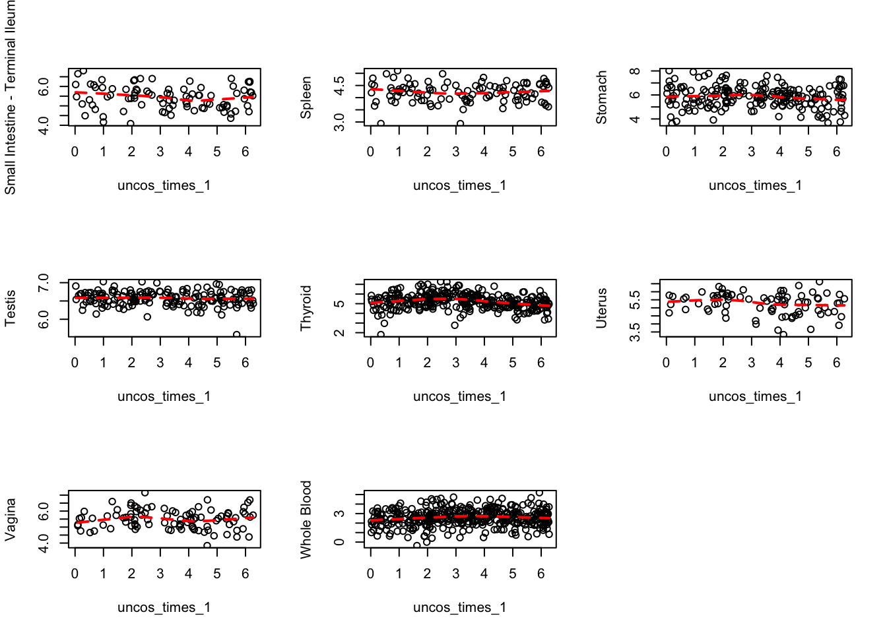
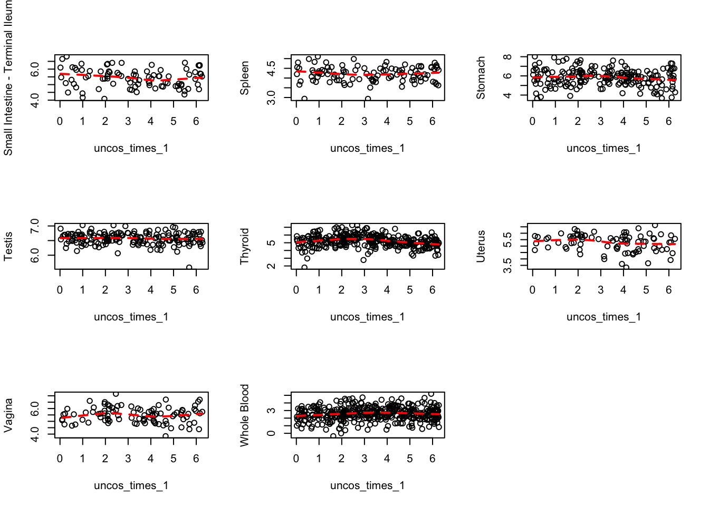

The Circadian rhythm/clock related genes that are detected by our methods include ENSG00000126368, ENSG00000049246, ENSG00000132326, ENSG00000213923, ENSG00000179094, ENSG00000008405.
We take a breif look into these genes.
ENSG00000126368 or NR1D1 is an important circadian pathway regulatory gene which is suppressed by cigarette smoke in murine lungs. It is a member of the clock gene family. It regulates cell proliferation, lipid metabolism, and inflammation and is also touted as a tumor suppressor. Article.
ENSG00000132326 or PER2 is PER2 is a member of the Period family of genes and is expressed in a circadian pattern in the suprachiasmatic nucleus, the primary circadian pacemaker in the mammalian brain. Genes in this family encode components of the circadian clock, which regulates the daily rhythms of locomotor activity, metabolism, and behavior.
ENSG00000049246 or PER3 is also a circadian gene, which belongs to the PER family along with PER1 and PER2. Screening of Clock Gene Polymorphisms Demonstrates Association of a PER3 Polymorphism with Morningness–Eveningness Preference and Circadian Rhythm Sleep Disorder. Article.
ENSG00000213923 or (Casein kinase I isoform epsilon). The circadian clock gene Csnk1e regulates rapid eye movement sleep amount, and nonrapid eye movement sleep architecture in mice. this causes cat eye syndrome.
ENSG00000179094 or PER1 is again from the period family of circadian clock genes. Circadian Clock Genes Per1 and Per2 Regulate the Response of Metabolism-Associated Transcripts to Sleep Disruption. Article.
ENSG00000008405 is a Circadian clock gene. Mammalian Cry1 and Cry2 are essential for maintenance of circadian rhythms. Article and mutations in these genes can cause sleep phase disorder. Article.
Reads expression profile
We take these genes one by one and look for the reads expression across the tissues. Here are the plots from the GTEx portal site.
It seems the CorShrink plots for these genes are much denser than the ones for the p53/p63 analysis, suggesting tissue sharing of circadian effects. Also, we see the very weak correlation between lymphocytes and fibroblasts with other tissues, which we validated through gene set enrichment analysis.
Correlation scatter plot (Fibroblasts)
ENSG00000130513
## 23 is the index for fibroblasts in person_tissue_genes tissue labels
par(mfrow=c(3,3))
for(j in 1:53){
plot(person_tissue_genes[,23, indices[2]], person_tissue_genes[,j, indices[2]], col="red", pch=20, cex=1, xlab = "Fibroblasts",
ylab = dimnames(person_tissue_genes)[[2]][j])
}
ENSG00000185088
## 23 is the index for fibroblasts in person_tissue_genes tissue labels
par(mfrow=c(3,3))
for(j in 1:53){
plot(person_tissue_genes[,23, indices[2]], person_tissue_genes[,j, indices[2]], col="red", pch=20, cex=1, xlab = "Fibroblasts",
ylab = dimnames(person_tissue_genes)[[2]][j])
}
Correlation scatter plot (Lymphoblasts)
ENSG00000132326
## 22 is the index for lymphoblasts in person_tissue_genes tissue labels
par(mfrow=c(3,3))
for(j in 1:53){
plot(person_tissue_genes[,22, indices[2]], person_tissue_genes[,j, indices[2]], col="red", pch=20, cex=1, xlab = dimnames(person_tissue_genes)[[2]][22],
ylab = dimnames(person_tissue_genes)[[2]][j])
}
ENSG00000185088
## 23 is the index for fibroblasts in person_tissue_genes tissue labels
par(mfrow=c(3,3))
for(j in 1:53){
plot(person_tissue_genes[,22, indices[4]], person_tissue_genes[,j, indices[2]], col="red", pch=20, cex=1, xlab = dimnames(person_tissue_genes)[[2]][22],
ylab = dimnames(person_tissue_genes)[[2]][j])
}


 
